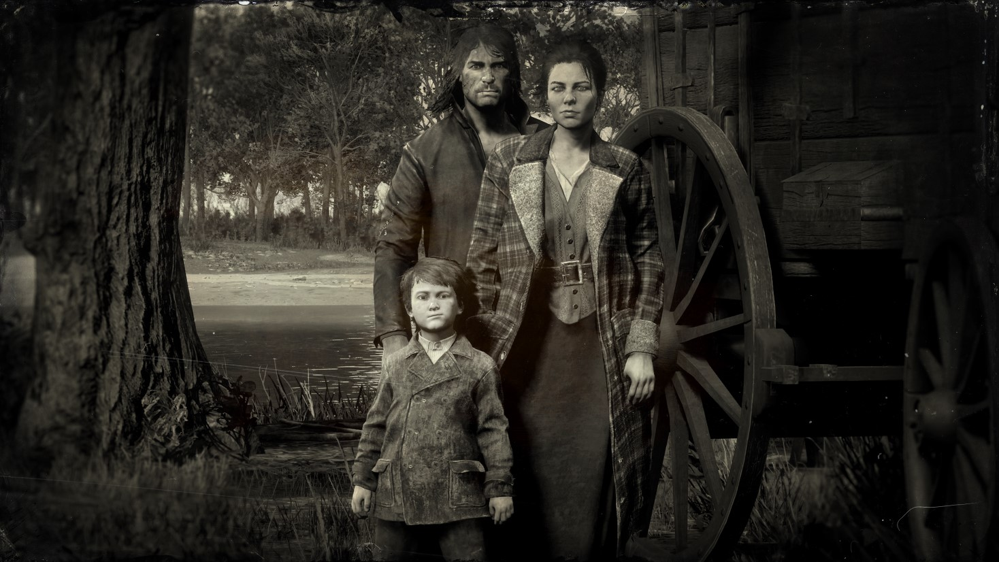
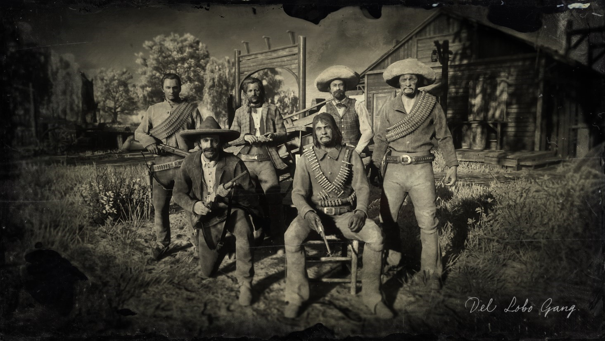
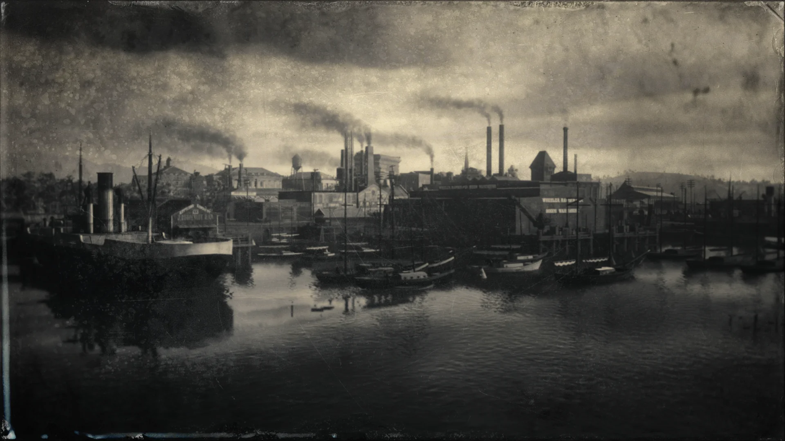

Wiki ANNO 1901
Personagens
Conhece algumas personagens do nosso servidor, ganha ideias e coloca a tua criatividade em prática. Torna a tua história única e explora.

Gangues
Existem diversos grupos neste ANNO nem todos são amigaveis mas se procuras algum grupo para te juntares estará tudo aqui.

Lore
Para te integrares bem deves saber a lore do servidor, é crucial para preservares a imersivade do servidor.
